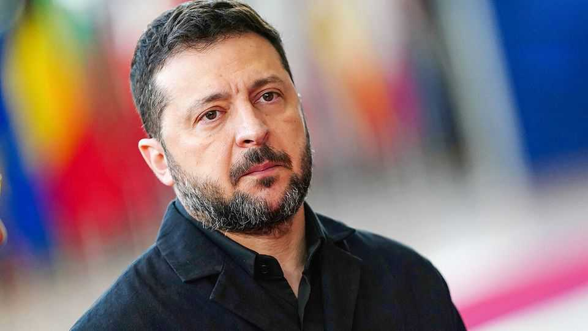

The America-Ukraine link grows even spottier
The Starlink cut-offs were a test, and worse may follow

Oct 22nd 2026
Editor’s note (October 22nd 2026): This article has been updated.
IN WASHINGTON last week’s move to cut Ukrainian drones’ connections to Starlink, Elon Musk’s satellite internet service, might have seemed like a diplomatic warning. In Ukraine it was felt on the battlefield. In a single sortie, one unit saw $1m-worth of drones fall from the sky after limits were imposed on any that flew faster than 160kph. (By October 22nd the links were functioning again without speed limits, according to Ukrainian commanders.) No one in Donald Trump’s administration admits to making the decision. It appears to have come from a small circle around the president, Mr Musk and Steve Witkoff, the special envoy to Russia. Reports suggest Mr Musk wanted to punish Ukraine for striking Russian refineries. One official says he contacted the White House only after imposing the restrictions.
Mr Musk has a complicated relationship with Ukraine. In 2022 he used a similar mechanism to stop a naval drone attack near Crimea. He has frequently railed against President Volodymyr Zelensky. But his decision to provide satellite connectivity in the first days of the war was critical to Ukraine’s survival. One insider insists Mr Musk is sympathetic to Ukraine, “though you do get the impression that Putin sometimes gets to him first.”
For Vladimir Putin, the cut-offs capped a wonderful fortnight. On October 9th Mr Trump announced a dubious deal to buy Russian diesel. The Americans then demanded an “energy ceasefire”, but explained this meant that only Ukraine must stop hitting Russian refineries, not that Russia must stop hitting Ukrainian power plants. Reports that Mr Trump restricted intelligence-sharing, though, were misleading. A failure by American satellites to warn Ukraine of incoming ballistic missiles may have been due to Russian jamming and bad weather.
An American government source insists Mr Trump is not trying to force Ukrainian capitulation, but is the victim of “a successful Russian info-op”. The president, the source says, is panicked by terrible polling ahead of the midterms. Mr Zelensky is a convenient scapegoat. Mr Trump’s envoys, Mr Witkoff and Jared Kushner, incorrectly see Mr Putin’s motivations as economic and territorial rather than nationalistic, making them vulnerable to Russian manipulation. “Trump creates a horrible situation,” says a former official, but he is also “dependent on idiots”.
The American arm-twisting coincides with a rush to resurrect a lopsided peace deal. On October 21st Mr Witkoff went to St Petersburg, where he praised Mr Putin as a “humanitarian”. Ukrainian officials lack full details of the latest proposals, but the outline is familiar. There would be a demilitarised zone in Donbas. Russia would get American business deals, sanctions relief and political normalisation. Ukraine would get an investment package and EU membership in exchange for renouncing NATO membership. The newest sweetener for Mr Putin is an offer to restart Russian gas sales to Europe, which were due to be phased out entirely by year’s end, and to restart the Nord Stream pipeline.
This is not America’s to offer, and violates EU law. Nor does Russia seem inclined towards peace as it heads into its most destructive winter campaign yet. It will most likely stall while banking immediate concessions on sanctions. Ukraine’s negotiators fear the American envoys will front-load lucrative business deals before the war has ended. From their perspective, “why wait and lose time?” as a Ukrainian official puts it. “Time is money.”
A conversation on October 19th between Mr Zelensky and Marco Rubio, the secretary of state, offered Ukraine a glimmer of hope. His renewed involvement in Ukraine suggests a fightback by the administration’s Russia hawks. But damage has been done. Mr Trump has again shown a preference for Mr Putin over Mr Zelensky. The Ukrainian president’s confrontational responses have deepened tensions.
Mr Zelensky’s turn to denouncing Mr Trump for “weak” decisions seems based on a gamble that an electoral drubbing will weaken him. That may be misplaced. The more a Democratic Congress investigates him, “the more aggressive he’ll be”, says a sympathetic congressional staffer. “This is not good for a country like Ukraine.” ■